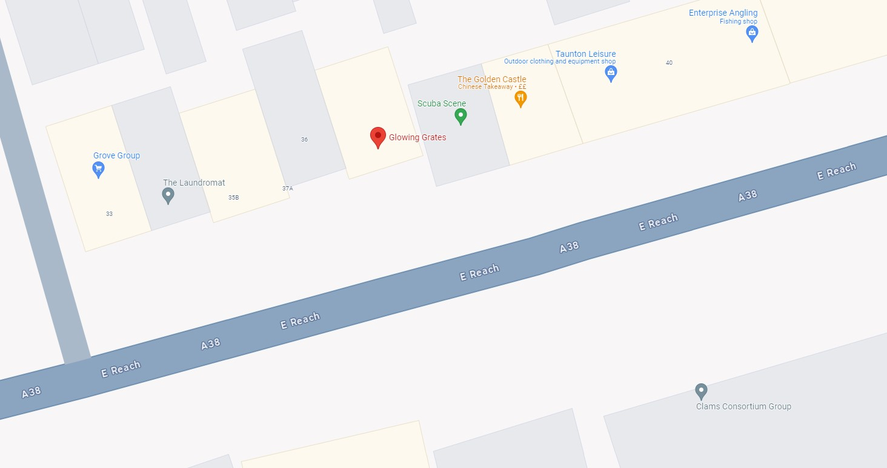

Home
Gallery
Contact
Dark Mode
Our Contact
This is our Contact form here you will be able to contact us
You can find us on 37 East Reach Taunton TA1 3ES
Our Phone number is 01823 354585
You can also contact us via email
Please enter your email:
Your question and queries
